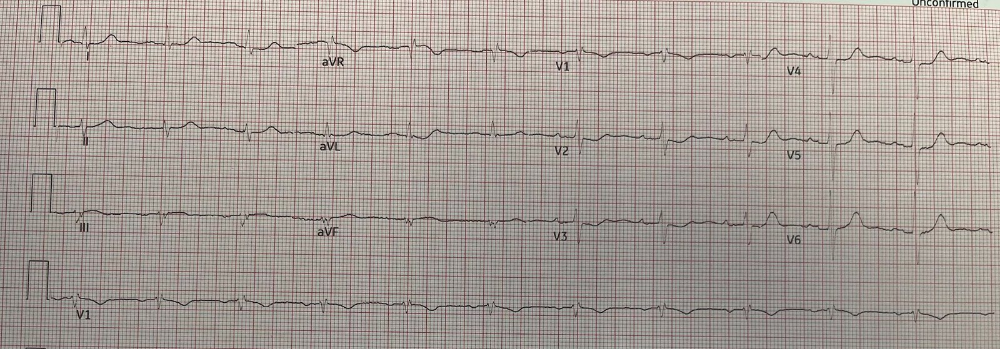
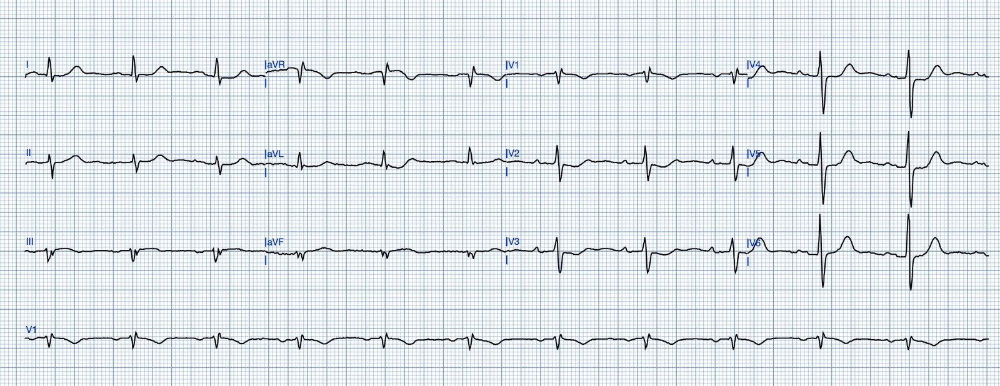
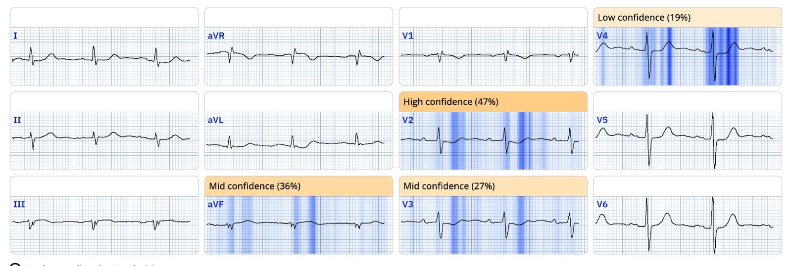
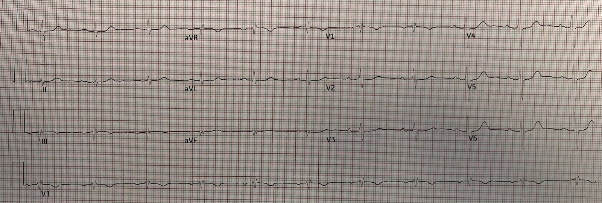
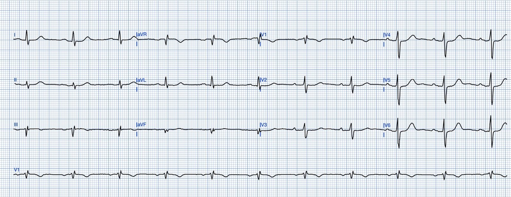
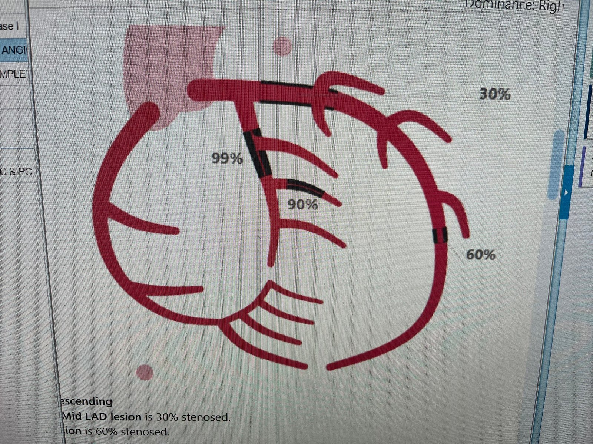
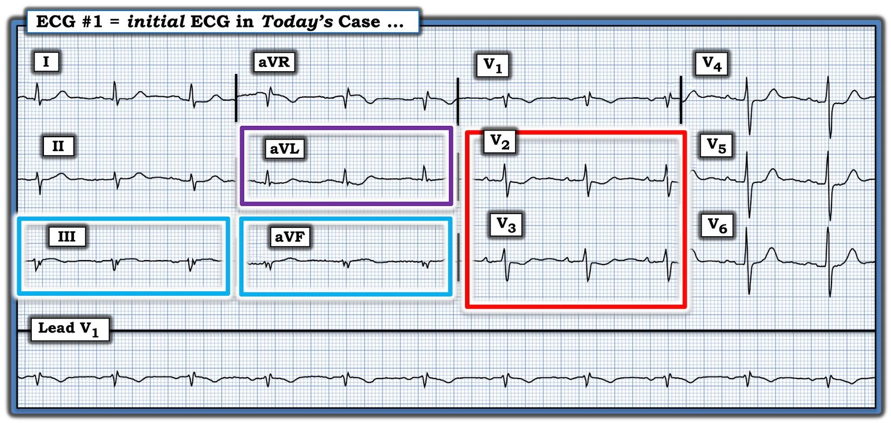
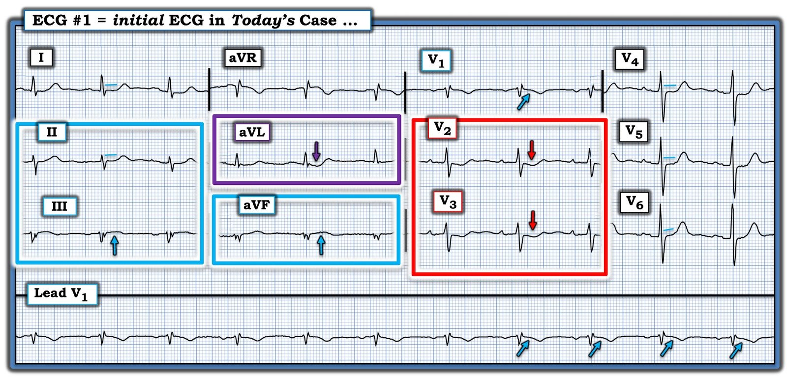

19/11/2024 — OMI này đã tái tưới máu hay đang diễn ra?
Bản dịch tiếng Việt của bài "Is this OMI reperfused or active?" – Dr. Smith’s ECG Blog. Giữ nguyên toàn bộ 9 hình ảnh của bản gốc.
Các điện tâm đồ này do một trong những cựu nghiên cứu viên siêu âm (ultrasound fellow) của chúng tôi, Will Smoot, nhắn tin cho tôi
Một bệnh nhân nam lớn tuổi được đội cấp cứu ngoài viện (EMS) đưa đến vì đau ngực sau xương ức cấp, lan
lên vai và cánh tay trái, khiến ông thức giấc lúc
0030.
Ông đã uống hai viên aspirin liều đầy đủ trước khi EMS đến. Cơn đau đỡ sau một lần xịt NTG (nitroglycerin) trước viện.
Ông đến khoa cấp cứu (ED) khi chưa đầy hai
giờ sau khởi phát, không còn đau.
Không có triệu chứng tương tự trước đây hay bệnh mạch vành (CAD) đã biết.
Tiền sử bệnh đáng chú ý: tăng huyết áp và tăng sản lành tính tuyến tiền liệt (BPH). Tiền sử gia đình đáng chú ý:
cha bị nhồi máu cơ tim lúc 56 tuổi, sống đến 83 tuổi. Không có tiền triệu nhiễm trùng
cấp, bệnh phổi đã biết hay chấn thương gần đây.
Đây là điện tâm đồ đầu tiên tại khoa cấp cứu:


Đây là điện tâm đồ đầu tiên đó sau khi được ứng dụng PM Cardio làm sạch:


Bạn nghĩ gì?
Smith: điện tâm đồ này chẩn đoán OMI dưới-sau. Có ST chênh lên (STE) kín đáo ở III và aVF, với sóng T dạng vòm và một ít đảo ngược ở phần cuối sóng T. Có ST chênh xuống (STD) ở các chuyển đạo trước tim, tối đa ở V2 và V3, chẩn đoán OMI thành sau.
Câu hỏi đặt ra là: đây là OMI đang diễn ra (Active OMI) hay là OMI đã tái tưới máu (Reperfused OMI)?
Tôi cho rằng điện tâm đồ còn mơ hồ (equivocal) ở điểm này. Việc bệnh nhân đã hết đau là bằng chứng tốt (nhưng không tuyệt đối chắc chắn) rằng động mạch đã được tái tưới máu.
Trước khi kết luận là có tái tưới máu, nên ghi một điện tâm đồ khác để xác định xem có diễn tiến của tái tưới máu hay không.
Queen of Hearts đã chẩn đoán “STEMI/tương đương STEMI” trên điện tâm đồ đầu tiên đó (hiện nay cô ấy dùng “STEMI Equivalent” [tương đương STEMI] thay cho OMI). Đây là phiên bản mới của Queen. Phiên bản cũ sẽ chẩn đoán “OMI” ngay cả khi đó là OMI đã tái tưới máu. Việc cô ấy nêu “STEMI-Equivalent” ở đây có nghĩa là cô ấy không cho rằng nó đã được tái tưới máu, nhưng cô ấy không biết rằng lúc này bệnh nhân đã hết đau.
Và đây là phần giải thích của AI (explainability):


Will Smoot: “Điện tâm đồ đầu tiên khi đến viện, rất lo ngại OMI.” (Will đã chạy điện tâm đồ qua Queen of Hearts và nhận kết quả “OMI”.)
Siêu âm tim tại giường (Will là bác sĩ cấp cứu đã được đào tạo chuyên sâu [fellowship] về siêu âm) không cho thấy rối loạn chức năng tâm thu
thất trái nặng, bất thường van cấp, giãn thất phải nặng hay
tràn dịch màng ngoài tim.
Troponin I độ nhạy cao ban đầu: 36.5 (ng/L) — tăng nhẹ.
Đây là điện tâm đồ 12 chuyển đạo ghi lại khoảng 20 phút sau (vẫn không đau)


Lúc này nó cho thấy rõ ràng có tái tưới máu
Sóng T đảo ngược ở các chuyển đạo dưới nhiều hơn
ST chênh xuống ở V2, V3 ít hơn.
Sau khi làm sạch:


Troponin lặp lại sau 2 giờ: 2820.4 ng/L (Không đo thêm troponin nào trong thời gian nằm viện)
Will: “Tôi đã trao đổi với bác sĩ tim mạch về nghi ngờ cao OMI, và anh ấy khuyến nghị xử trí
NSTEMI theo chuẩn và sẽ lên kế hoạch thông tim vào cuối ngày hôm đó. Bệnh nhân được nhập
khoa của bác sĩ nội viện (hospitalist), dùng heparin.”
Chụp mạch vành:


Tắc 99% động mạch mũ (Circumflex) (đã tái tưới máu).
Dòng chảy TIMI không được nêu rõ, nhưng có lẽ là đủ.
Không đo troponin đỉnh.
Kết quả siêu âm tim qua thành ngực (TTE):
Kích thước thất trái bình thường. LVEF 55-60%. Giảm động thành dưới-bên và thành dưới đoạn đáy-giữa mức độ nhẹ.
Kích thước và chức năng thất phải bình thường.
Những điểm cần học:
1) Học cách nhận ra OMI kín đáo (Subtle OMI)
2) Trước khi cho rằng một OMI đã được tái tưới máu, hãy kiểm chứng điều đó bằng cách ghi thêm điện tâm đồ để thấy diễn tiến của tái tưới máu.

===================================
BÌNH LUẬN CỦA TÔI, bởi KEN GRAUER, MD (19/11/2024):
===================================
Điện tâm đồ ban đầu của ca hôm nay là thêm một ví dụ nữa về một bản ghi có Câu trả lời “Nhanh” — cũng như một Câu trả lời chậm hơn, đầy đủ hơn.
- Câu trả lời “Nhanh” — đề cập cách tiếp cận ca này với giả định bạn đang làm việc tại một ED (Emergency Department — khoa cấp cứu) đông đúc, nơi có 3 bệnh nhân đến cùng lúc với CP mới xuất hiện (Chest Pain — đau ngực) — và BẠN chỉ có vài giây để quyết định liệu điện tâm đồ ban đầu có (hay không) thể hiện OMI cấp cho đến khi chứng minh được điều ngược lại?
- Câu trả lời chậm hơn đầy đủ hơn — đề cập một trong những mục tiêu chính của Dr. Smith’s ECG Blog, đó là đánh giá hiệu quả về thời gian các dấu hiệu MẤU CHỐT của bản ghi trước mặt chúng ta, kể cả những thay đổi kín đáo hơn có thể liên quan đến ca bệnh.
==========================
Trước tiên — Câu trả lời “Nhanh”:
==========================
Để cho rõ, trong Hình 1 — tôi đã tái hiện những dấu hiệu trong điện tâm đồ ban đầu đã “đập vào mắt tôi”, giúp tôi theo đúng nghĩa đen có thể biết trong vòng 5 giây rằng bất kể các điện tâm đồ theo dõi và các lần đo Troponin liên tiếp có thể cho thấy gì — bệnh nhân này cần được thông tim ngay!
- Bệnh sử trong ca hôm nay rất đáng lo ngại! = một người đàn ông 72 tuổi bị đánh thức khỏi giấc ngủ bởi cơn đau ngực (CP) dữ dội lan ra cánh tay và vai trái. Bệnh sử này ngay lập tức xếp bệnh nhân vào nhóm nguy cơ cao hơn có biến cố tim cấp (tức là, chúng ta cần loại trừ một biến cố cấp, chứ không phải ngược lại). Do đó, ngay cả những bất thường điện tâm đồ kín đáo cũng cần được coi là cấp tính cho đến khi chứng minh được điều ngược lại.
- ĐIỂM THEN CHỐT (PEARL) #1: Với bệnh sử này — “mắt” tôi nhảy ngay tới sóng ST-T ở chuyển đạo V2 và V3 (trong hình chữ nhật ĐỎ ở Hình 1). Như chúng tôi vẫn thường nhấn mạnh trong Dr. Smith’s ECG Blog — ở bệnh nhân đau ngực mới xuất hiện, dấu hiệu ST chênh xuống tối đa ở chuyển đạo V2, V3 và/hoặc V4 = OMI thành sau cấp cho đến khi chứng minh được điều ngược lại.
- Biết rằng có thể cần thêm bằng chứng hỗ trợ để thuyết phục một bác sĩ can thiệp còn hoài nghi — “mắt” tôi tiếp theo nhảy tới 2 chuyển đạo nằm trong các hình chữ nhật XANH NHẠT (tức là, tới các chuyển đạo dưới III và aVF). Mỗi chuyển đạo này đều cho thấy đoạn ST dạng vòm (coving) kín đáo-nhưng-có-thật kèm chênh lên nhẹ.
- ĐIỂM THEN CHỐT (PEARL) #2: Cách TỐT NHẤT để xác nhận rằng các dấu hiệu sóng ST-T có khả năng cấp tính ở chuyển đạo III là “có thật” — là vận dụng mối quan hệ sóng ST-T soi gương “kỳ diệu” giữa chuyển đạo III và chuyển đạo aVL (có tác dụng vì chuyển đạo aVL nằm gần như đối diện trực tiếp với chuyển đạo III trên mặt phẳng trán). Vì vậy “mắt” tôi tiếp theo nhảy tới chuyển đạo aVL (trong hình chữ nhật TÍM ở Hình 1) — nơi tôi ngay lập tức thấy ST chênh xuống soi gương kèm phần cuối sóng T dương — qua đó xác nhận nhiều khả năng tính cấp tính của ST chênh lên kín đáo ở các chuyển đạo dưới.
NHẬN ĐỊNH CỦA TÔI (khi xem điện tâm đồ #1 và biết bệnh sử):
- OMI dưới-sau cấp — cho đến khi chứng minh được điều ngược lại.
- Tổng thời gian tôi cần để nhận ra các dấu hiệu MẤU CHỐT nêu trên nằm trong các hình chữ nhật có màu ở Hình 1 — theo đúng nghĩa đen là chưa đến 5 giây.
- Đối với bất kỳ người thầy thuốc nào có thể vẫn còn chưa chắc chắn về cách đọc theo Câu trả lời “nhanh” đối với Hình 1 — Việc sử dụng ứng dụng QOH sẽ xác nhận nhận định của bạn về OMI cấp cần thông tim ngay (như được thể hiện qua kết quả đọc của QOH, đã được bác sĩ Smith bàn luận ở trên).
- NHƯNG — chỉ cần nhận thức đơn giản về tầm quan trọng của bệnh sử lâm sàng và 2 khái niệm đã được ôn lại trong Điểm then chốt #1 và Điểm then chốt #2 (nêu ở trên) — là đủ để bạn tự tin chẩn đoán OMI cấp cần thông tim ngay, dù có (hay không có) sự hỗ trợ của ứng dụng QOH.


==========================
Bây giờ — Câu trả lời chậm hơn, đầy đủ hơn:
==========================
Tôi đã đánh dấu điện tâm đồ ban đầu của ca hôm nay đầy đủ hơn ở Hình 2 — để bao gồm thêm những dấu hiệu điện tâm đồ kín đáo hơn nhưng có liên quan.
- ST chênh xuống ở chuyển đạo V2 và chuyển đạo V3 không chỉ sâu hơn so với ở các chuyển đạo ngực khác — mà đoạn ST ở 2 chuyển đạo này còn dốc xuống kèm phần cuối sóng T dương. Điều này ủng hộ OMI thành sau cấp cho đến khi chứng minh được điều ngược lại.
- Dù vậy — đoạn ST bị thẳng đuỗn ở các chuyển đạo ngực còn lại ( = chuyển đạo V4,V5,V6).
- ST thẳng đuỗn cũng được thấy ở chuyển đạo I — và ở chuyển đạo II.
- ĐIỂM THEN CHỐT (PEARL) #3: Mặc dù mối lo ngại lớn nhất trong ca hôm nay là các thay đổi sóng ST-T gợi ý OMI dưới-sau cấp — ST thẳng đuỗn và/hoặc chênh xuống được thấy ở không dưới 8/12 chuyển đạo (tức là, ở các chuyển đạo I,II,aVL; V2-đến-V6). Việc kiểu phân bố lan tỏa của ST dẹt/chênh xuống này xảy ra cùng với ST chênh lên ở các chuyển đạo III,aVF và ở chuyển đạo aVR — gợi ý rằng bệnh nhân này nhiều khả năng có bệnh nhiều nhánh mạch vành nền bên cạnh bất kỳ bất thường cấp nào có thể đang diễn ra (với đặc điểm và ý nghĩa lâm sàng tương tự thiếu máu cục bộ dưới nội tâm mạc lan tỏa (Diffuse Subendocardial Ischemia) và/hoặc hình ảnh Aslanger).
Phần trên để lại cho chúng ta việc đánh giá hình dạng phức bộ QRST trên điện tâm đồ ở chuyển đạo V1. Những hàm ý có thể có liên quan về mặt lâm sàng của hình dạng QRST ở chuyển đạo V1 bao gồm:
- Hình thái rSr’ ở chuyển đạo V1 — phù hợp với IRBBB (Incomplete Right Bundle Branch Block — blốc nhánh phải không hoàn toàn), do có sóng S tận hẹp ở các chuyển đạo bên trái I và V6 — và độ rộng QRS chưa tới 0.11 giây.
- Mặc dù có thể hình thái rSr’ ở chuyển đạo V1 (mà chúng ta không thấy ở chuyển đạo V2) là kết quả của việc đặt điện cực ngực V1 quá cao (chuyển đạo này quả thật cho thấy sóng P âm không thấy ở chuyển đạo V2) — tôi đã diễn giải phức bộ rSr’ này ở chuyển đạo V1 là phù hợp nhất với IRBBB dựa trên các sóng S tận ở chuyển đạo bên.
- Cuối cùng — Chẳng phải đoạn ST ở chuyển đạo V1 có dạng vòm và chênh lên nhẹ sao? Dù khó nhận ra vì biên độ QRS ở V1 nhỏ — mũi tên XANH ở chuyển đạo này làm nổi bật một hình dạng sóng ST-T khác với ST chênh xuống được dự kiến thường thấy ở chuyển đạo V1 khi có IRBBB.
- Bằng chứng xác nhận rằng đoạn ST ở chuyển đạo V1 đúng là thực sự chênh lên và bất thường đến từ: i) So sánh với đoạn ST ở chuyển đạo V2 kế cận vốn chênh xuống rõ ràng không thể nhầm; — và, ii) Lợi thế của chúng ta là không chỉ có 2 nhát — mà có tới 11 nhát (tức là, “lần nhìn”) vào sóng ST-T trên dải nhịp dài của chuyển đạo V1 — cả-11-nhát đều cho thấy đoạn ST dạng vòm tương tự với ST chênh lên nhẹ-nhưng-có-thật (các mũi tên XANH ở dải dài chuyển đạo V1).
ĐIỂM THEN CHỐT (PEARL) #4: Ý nghĩa lâm sàng của hình dạng ST này ở chuyển đạo V1 là gì? Để trả lời câu hỏi này — 2 điều cần cân nhắc đã nảy ra trong đầu tôi:
- Trong bối cảnh OMI dưới-sau cấp như ở ca hôm nay — ST chênh lên ở chuyển đạo V1 nhưng không ở các chuyển đạo kế cận V2,V3 — có thể phản ánh tổn thương thất phải cấp. Nếu điều này đúng — nó sẽ định vị động mạch “thủ phạm” ở RCA đoạn gần, vì LCx không cấp máu cho thất phải.
- Ngoài ra — ST dạng vòm và chênh lên mà chúng ta thấy ở chuyển đạo V1 — kết hợp với ST chênh xuống ở 8/12 chuyển đạo + ST chênh lên ở các chuyển đạo III,aVR,aVF và V1 (với ST chênh lên nhiều nhất ở chuyển đạo aVR) — có thể chỉ đơn giản phản ánh DSI (Diffuse Subendocardial Ischemia — thiếu máu cục bộ dưới nội tâm mạc lan tỏa) do các kiểu tuần hoàn bàng hệ bị thay đổi và bệnh mạch vành nhiều nhánh nền đáng kể, bên cạnh OMI dưới-sau cấp.
ĐIỀU CỐT LÕI: Thật đáng thất vọng khi bác sĩ tim mạch hội chẩn trong ca hôm nay đã trì hoãn việc thông tim ngay vì đã đọc nhầm điện tâm đồ ban đầu là gợi ý một “NSTEMI”.
- Thông tim cuối cùng đã xác nhận OMI dưới-sau kèm bệnh nhiều nhánh mạch vành đáng kể.

